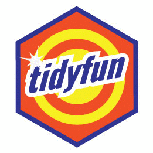
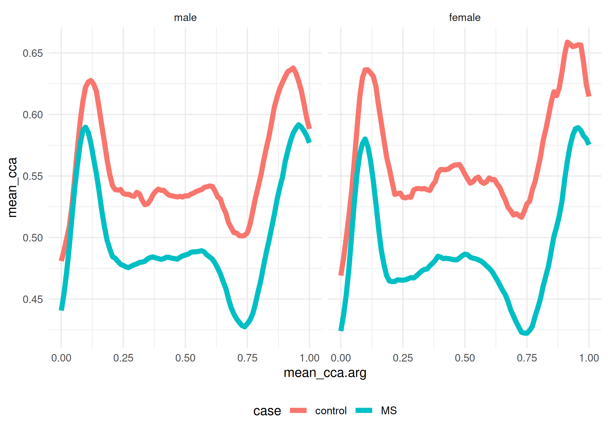

tidyfun 
tidyfun is a tidyverse-oriented interface layer around the core tf package. It makes functional data analysis in R easier by focusing on data wrangling, exploratory analysis, and graphics for functional data stored in ordinary data frames.
The underlying tf package defines the tf vector type and the core functional-data methods. tidyfun builds on those objects with helpers for working inside data frames, plus plotting and workflow tools that fit naturally into the tidyverse.
Crucially, vectors of class tf can be included in data frames alongside other variables, enabling data manipulation with standard tidyverse tools. This matches the functional-data view that complete functions are the unit of observation; with tidyfun, full curves sit alongside numeric, factor, and other observations on the same subject.
Installation
Install the released version from CRAN:
install.packages("tidyfun")Or install the current development version from GitHub:
install.packages("pak")
pak::pak("tidyfun/tidyfun")Overview
tidyfun provides:
-
tidyverse-friendly wrangling tools for functional data inside data frames -
tidyfun-level graphics helpers fortfvectors and tidy functional data frames - documentation and examples that sit on top of the core
tfdata structures and methods
For detailed information on the features of tidyfun, check out articles on the following topics:
-
Representing functional data as
tfvectors, and operating on those vectors with coretfmethods andtidyfunconveniences -
Converting non-tidy functional data (matrices, “long” and “wide” data frames) to tidy functional data using
tidyfunworkflows built ontf -
Wrangling data frames that include functional data using
tidyverseandtidyfuntools -
Visualizing tidy functional data with
tidyfungraphics helpers -
Registering functional data with the
tfregistration methods documented for use in thetidyfunecosystem
The result is a package that enables exploratory data analysis like the following, which computes group-specific mean curves in the dti_df dataset, and plots the result:
library("tidyfun")
data(dti_df, package = "tidyfun")
dti_df |>
group_by(case, sex) |>
summarize(mean_cca = mean(cca, na.rm = TRUE)) |>
tf_ggplot(aes(tf = mean_cca, color = case)) +
geom_line(linewidth = 2) +
facet_grid(~sex)
What does it do?
Core tf data types and methods
The underlying {tf} package defines the tf vector classes and related methods, including raw functional data (tfd) and basis representations (tfb). For an overview, see the tf vectors article and the reference index.
Such tf-objects can be subsetted or subassigned, computed on and summarized.
Almost all
- operators like
==,+or* - math functions like
sum,logorabs - and statistics functions like
meanorsd
are defined for these tf data structures, as illustrated in the tf vectors article and the reference index.
The tf objects are basically glorified lists, so they work well as columns in data frames. That makes it a lot easier to keep your other data and functional measurements together in one object for preprocessing, exploratory analysis and description. At the same time, these objects actually behave like vectors of functions to some extent, i.e., they can be evaluated on any point in their domain, they can be integrated or differentiated, etc.
See here for more information on the operations defined for tf vectors.
Methods for converting existing data to tf
The underlying tf package provides the tfd and tfb constructors for converting matrices, data frames, etc. to tf vectors. tidyfun builds on those objects with tf_gather & tf_nest to reshape tables with functional data, by going from wide to narrow or from long to short; functions like as.matrix, tf_spread & tf_unnest can reverse these data conversions.
See here for details on getting data into (and out of) the tf format.
tidyverse verbs for dealing with functional data inside data frames
All dplyr verbs work on tf-columns, so you can filter, mutate, group_by & summarize, etc., functional data pretty much like conventional “tidy” data. tidyfun workflows also work naturally with tf helpers such as tf_anywhere and tf_smooth.
See here to see how you can wrangle functional data.
New ggplot2 geoms and stats for functional data
tidyfun provides tf_ggplot(), which lets you use standard ggplot2 geoms (geom_line, geom_point, geom_ribbon, …) with functional data via the tf aesthetic. It also includes specialized pasta-themed geoms:
-
gglasagnafor lasagna plots (heatmaps), with anorder-aesthetic to sort the lasagna layers, -
geom_capellinifor glyphs plots (i.e., sparklines), -
geom_fboxplotfor functional boxplots based on data depth,
{kind=link}
{kind=link}
as well as methods for base R graphics functions plot, lines and points for quick and easy visualizations of functional data.
See here for the documentation of the visualization approaches, or browse the reference index.
Curve registration
tidyfun documents multiple tf methods for aligning curves in time via tf_register: elastic SRVF alignment, continuous registration (CC), affine shift/scale models, and landmark registration. All methods return tf_registration objects with a consistent interface for extracting aligned curves, inverse warping functions, and diagnostic summaries.
See here for a practical guide covering method selection, diagnostics, and worked examples on real data.
Found a bug? Got a question? Missing some functionality?
Please let us know so we can make it better.